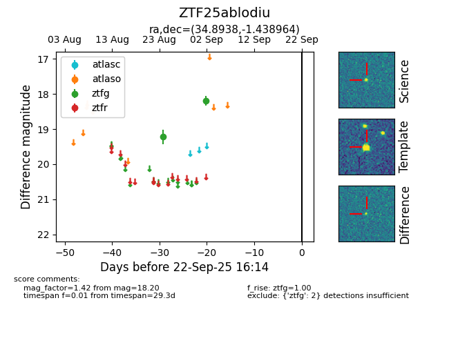

FINK: ZTF25ablodiu
Lasair: ZTF25ablodiu
ALeRCE: ZTF25ablodiu
ZTF25ablodiu (ztf,fink)
equatorial (ra, dec) = (34.8938,-1.43896)
galactic (l, b) = (166.0736,-56.73821)

last ztfg=18.20
2 ztfg detections